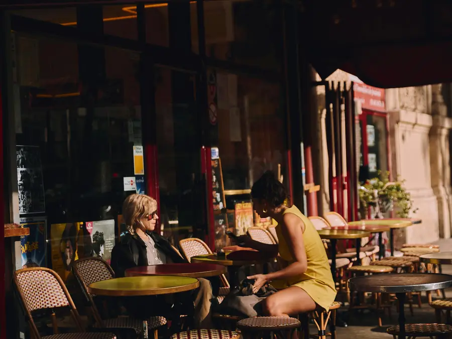

About Us
Named after the tree that feeds a whole neighbourhood.
The marula tree is known for one thing above all: it brings everyone together — people, birds, animals — under one canopy, drawn by what it has to offer. That's the idea behind this place.
MARULA. started as a weekend pop-up before we found this space. What hasn't changed is the pace: we want people to stay, not just pass through. That means real seating, real conversation, and coffee worth slowing down for.
Every plate is made on-site each morning. Every bean is sourced from small South African roasters, rotated monthly so regulars always have something new to try.
